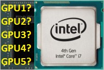

Советчик по компам
Выбор компьютера, 2019 год + ТОП-6 цена-качествоЛучшие сборки ПК на разные задачи
Как выбрать хороший компьютер по нормальной цене? Возможно ли собрать или купить недорогой игровой компьютер? Какие выбрать комплектующие и у кого из производителей они самые надежные? На что еще обратить внимание при выборе компьютера? В статье описаны принципы выбора современного компьютера, а в ее конце приведены лучшие конфигурации (сборки) бюджетных, универсальных и игровых компьютеров 2019 года, приоритеты - высокая надежность, низкая цена и минимальный шум при работе..
Таблица совместимости процессор/видеокарты

Какие видеокарты подходят процессору? В этой статье в один клик можно подобрать современные видеокарты под любые процессоры 2010-2019 годов. Рекомендуется использовать эти данные как при покупке нового компьютера, так и при модернизации старого.
Как выбрать интересную востребованную профессию
Завтра неумолимо тянет нас вперед и в жизни каждого человека неизбежно наступает момент, когда приходится выбирать свою будущую профессию. Кто-то полагается в этом на свою интуицию, жизненный опыт родителей или рекомендации друзей, другие же ищут ответ на самый актуальный вопрос современного общества потребления - "как мало работать и много зарабатывать". Так что же выбрать - профессию для заработка, профессию для души и можно ли их объединить? В статье разбираемся, как правильно выбрать свою будущую профессию, чтобы быть востребованным и не остаться "за бортом".